Project list & sidebar (drawer)
On a phone the left tree becomes a 240px drawer over the chat. It shows the tree of projects and a one-line Machines summary, but hides every workgroup and machine detail behind a collapse or a second tap.
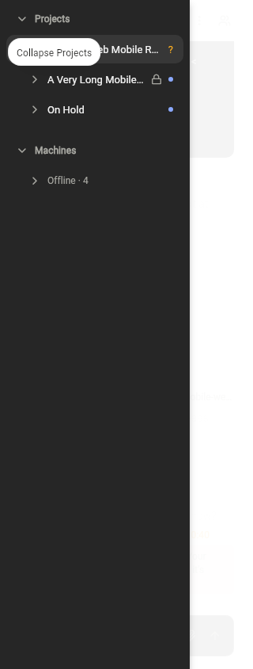
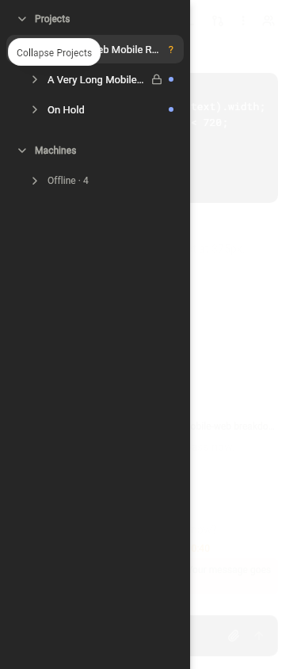
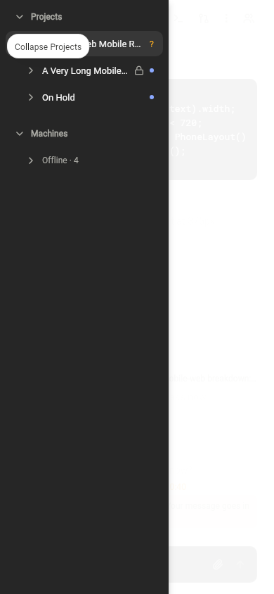
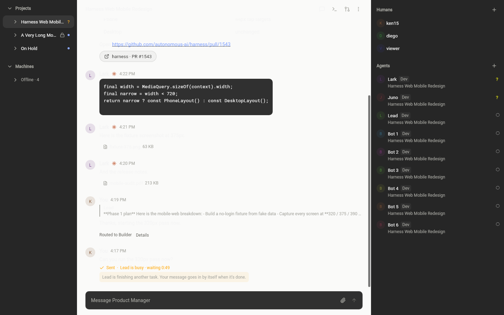
Lead chat
The conversation becomes full-width. Long content and toolbars do not adapt: a code block runs off the right edge and the header icon row is cramped.
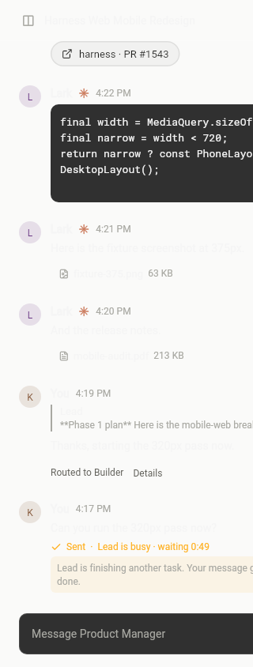
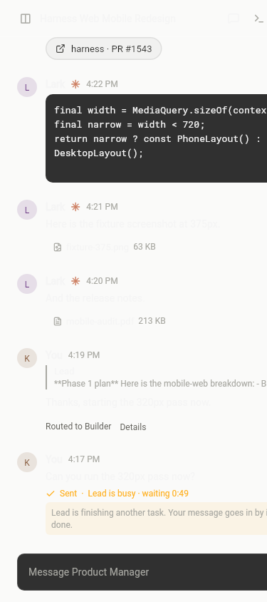
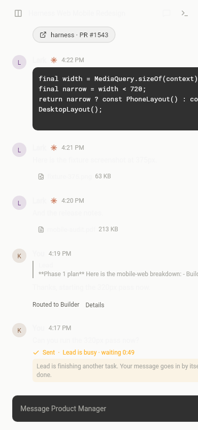
Workgroup & status
Workgroups are not cards. A workgroup chat shows a thin route note and a truncated header; status and checks live in a modal behind the desktop options menu.
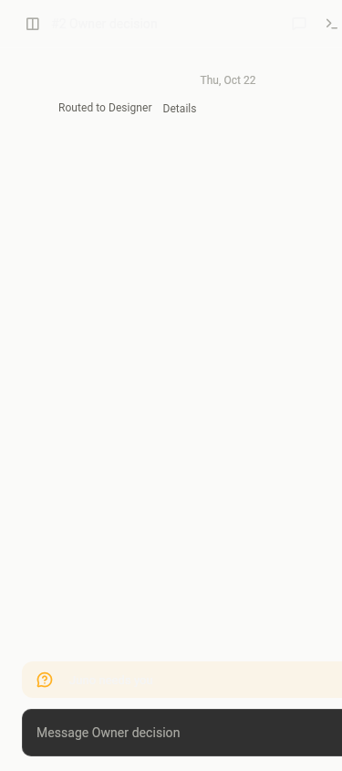
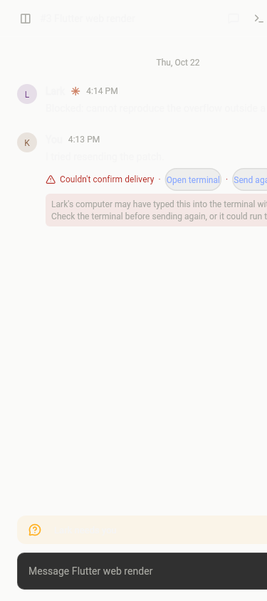
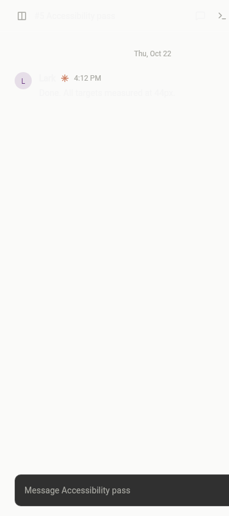
People, agents & machines
The roster becomes a full-width overlay that covers the conversation. It reads reasonably, but there is no bottom sheet, so a user cannot keep watching the chat while choosing an agent.
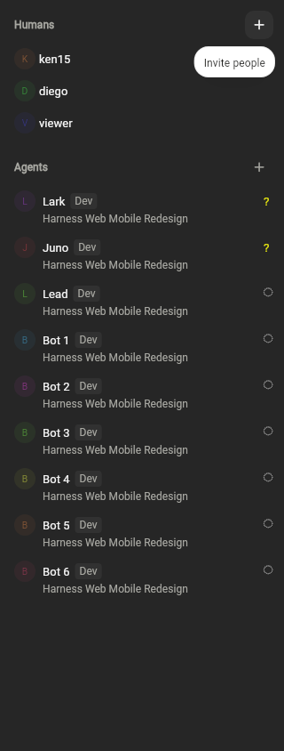
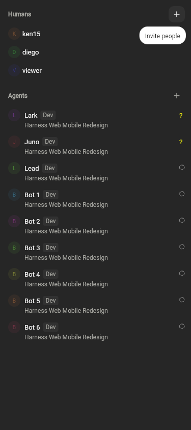
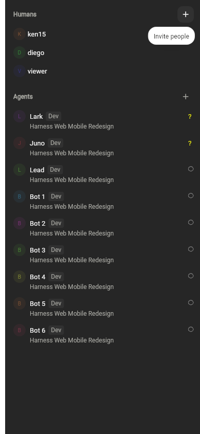
Empty, read-only & offline
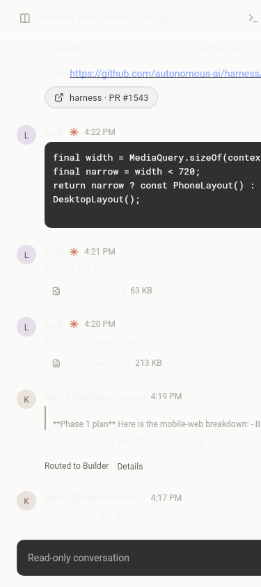
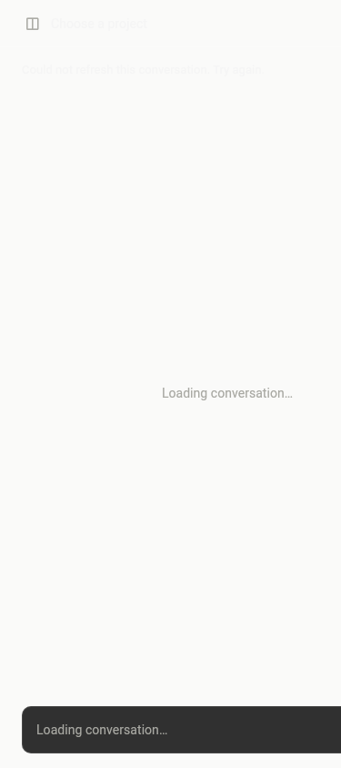
Numbered problems
- High Sidebar drawer text truncates project names (e.g. “A Very Long Mobile…”), so a phone user cannot read a long title at all.
- Medium Workgroups are hidden behind a collapsed tree; there is no home-screen list to jump into a conversation.
- High The Machines group is only a one-line “Offline · 4”. Per-machine status, resources, and “add machine” are unreachable on a phone.
- Medium Hover-only affordances (“Collapse Projects”, “Invite people”) do not translate to touch.
- High A code block does not wrap: long lines run past the right edge at 320px.
- High The header icon row is crammed at 320px and the “Members and machines” button sits at the screen edge, making it hard to reach.
- Medium Wide markdown tables/lists render as a block wider than the viewport with no horizontal scroll.
- Medium The composer is full-width but its attach/send buttons are ~32px, under the 44px touch target.
- Medium The “needs you” banner text is clipped and offers no inline action on a phone.
- High A workgroup has no card in the chat; its status, PR and open/stop state are buried in a desktop modal.
- Medium The workgroup header (“#2 · Owner decision”) is truncated and the transcript is mostly empty on a phone.
- Low Agent rows carry a lot of text (name, engine badge, project) and the right-side status icons are very small.
- High No bottom sheet: the roster and machines are full-screen overlays that cover the conversation while you choose an agent.
- Medium The empty state and offline error are small centered text with a lot of dead space and no obvious create/retry button.